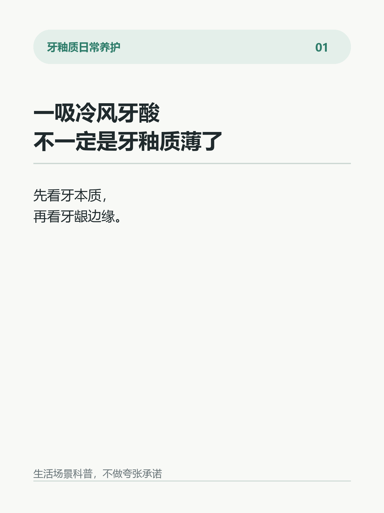
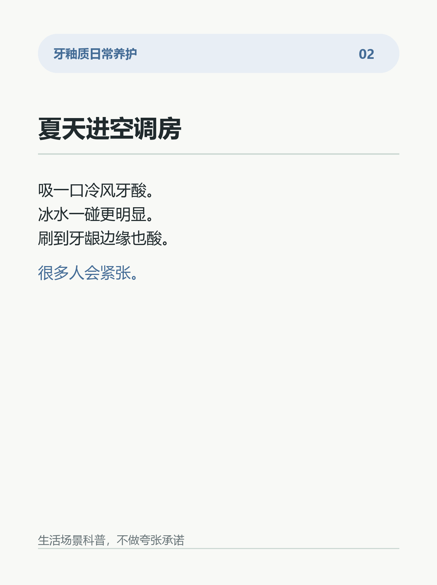
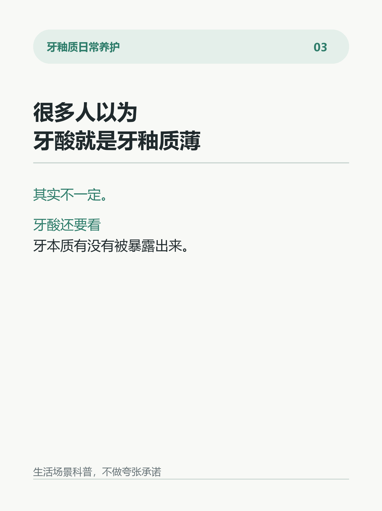
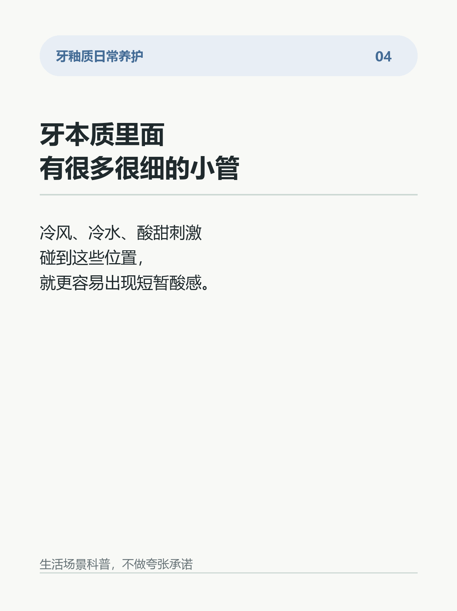
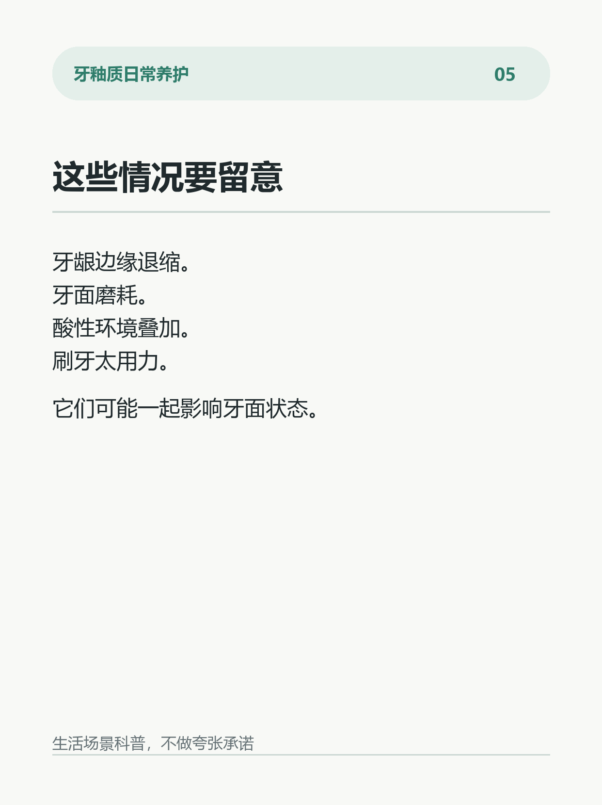
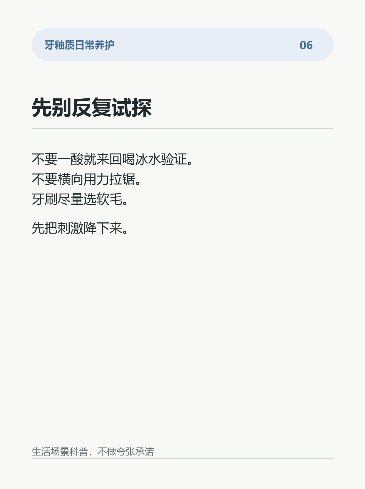
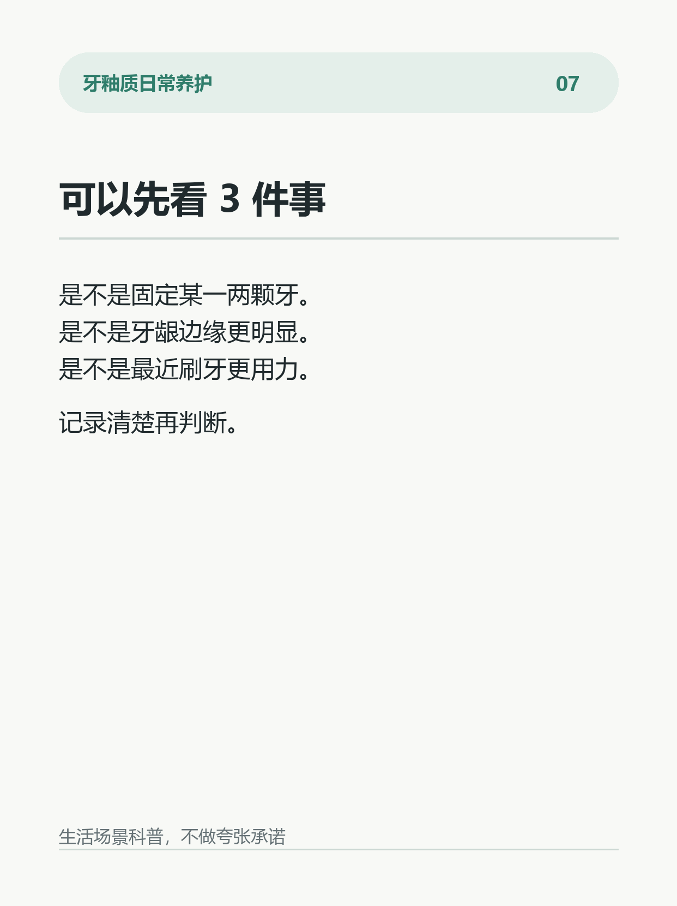
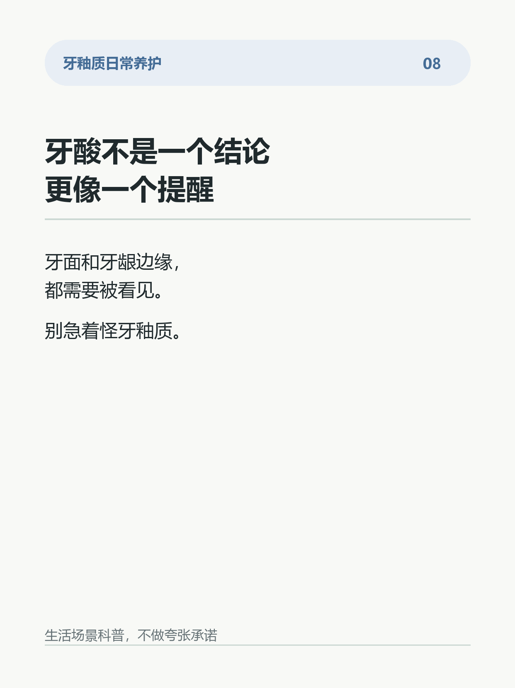

一吸冷风牙酸，不一定是牙釉质薄了
夏天进空调房，有些人会遇到一个很具体的瞬间：
吸一口冷风，牙突然酸一下。
喝常温水没事，冰水就明显。
刷到牙龈边缘，也会有一点“过电感”。
很多人第一反应是：
是不是牙釉质变薄了？
不一定。
牙酸的感觉，常常不是只看牙釉质厚不厚。
更关键的是：牙本质有没有被暴露出来。
牙本质里面有很多很细的小管。牙龈边缘退缩、牙面磨耗、酸性环境叠加、刷牙太用力，都可能让这些区域更容易接受冷热刺激。
当冷风、冷水、酸甜刺激碰到这些位置，里面的液体变化会带来短暂酸感。
所以，牙酸不等于牙釉质一定“坏了”。
它更像一个提醒：
牙面和牙龈边缘的状态，需要被看见。
更稳的做法：
1. 先观察酸感是不是固定在某一两颗牙。
2. 刷牙别横向用力拉锯，尤其是牙龈边缘。
3. 牙刷选软毛，别为了“刷干净”越刷越狠。
4. 冷热酸甜刺激明显时，少做反复试探。
5. 如果酸感持续、范围扩大，建议做一次口腔检查。
很多人以为：
牙酸就是牙釉质薄。
其实也可能是牙龈边缘、牙本质暴露、刷牙方式和饮食环境一起在起作用。
别急着自己下结论。
先把刷牙动作、牙刷硬度、刺激频率稳住。
你有没有那种“一吸冷风就酸”的牙？
#牙釉质 #牙齿敏感 #护牙日常 #牙面状态 #刷牙习惯 #口腔护理 #生活小习惯 #空调房








参考来源与边界
# 参考来源
1. American Dental Association / MouthHealthy. Sensitive Teeth.
https://www.mouthhealthy.org/all-topics-a-z/sensitive-teeth
2. National Institute of Dental and Craniofacial Research. Sensitive Teeth.
https://www.nidcr.nih.gov/health-info/sensitive-teeth
3. Liu X, Tenenbaum HC, Wilder RS, Quock R, Hewlett ER, Ren YF. Pathogenesis, diagnosis and management of dentin hypersensitivity: an evidence-based overview for dental practitioners. BMC Oral Health. 2020.
https://doi.org/10.1186/s12903-020-01199-z
4. West NX, Lussi A, Seong J, Hellwig E. Dentin hypersensitivity: pain mechanisms and aetiology of exposed cervical dentin. Clinical Oral Investigations. 2013.
https://doi.org/10.1007/s00784-012-0887-x
5. American Dental Association / MouthHealthy. Brushing Your Teeth.
https://www.mouthhealthy.org/all-topics-a-z/brushing-your-teeth
# 证据边界
这些资料可以支持：冷热酸甜刺激引起的短暂牙酸，常与牙本质暴露、牙本质小管和牙龈边缘状态有关；刷牙力度、牙刷硬度和酸性环境也可能影响牙面状态。
这些资料不能支持：所有牙酸都来自同一个原因；一吸冷风牙酸就一定是牙釉质变薄；任何日常护理方式都能承诺绝对结果。